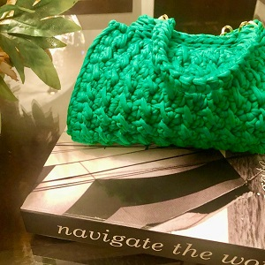

Sobre o Ateliê LeCler
O Ateliê LeCler foi criado devido a paixão por atesanato de sua fundadora S.Chiquetti, fundado em 2020 devido a pandemia de COVID, que assolou o mundo, uma paixão antiga por atenasato, se aflorou nesse período de reclusão social, nascendo assim o Ateliê LeCler.
Minha missão é levar minha arte em forma de acessórios, roupas e ornamentos a todos os Brasileiros que desejam se embelezar e embelezar suas casas com trabalhos manuais, exclusivos e autênticos.
Trabalho de forma personalizada, adaptando os produtos às preferências de meus clientes, tornando os produtos ainda mais exclusivos.
Categoria de Produtos
- Trabalhos em:
- Crochês
- Macramês
- Tricô
- Ponto Cruz
Nosso Estabelecimento
Nosso estabelecimento está localizado no coração da cidade.